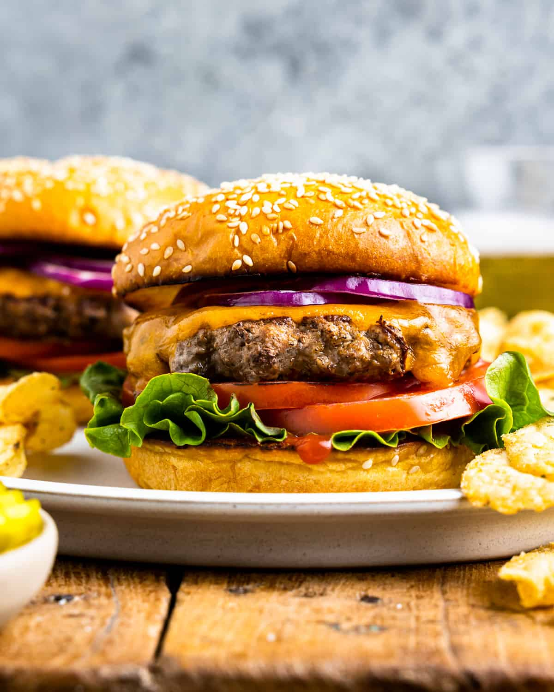

hamgurgers recipes

ingredients
- · Ground Chuck: Ground chuck is ideal for burger patties. I recommend a lean 80/20
- Seasoning:· I keep the seasoning simple with salt and pepper to taste. But feel free to add in garlic and onion powder, paprika, or your favorite burger seasoning blend.
- · Cheese: A slice of American or cheddar cheese is perfect for cheeseburgers, but any type works fine (try pepper jack or swiss). Or you can skip the cheese if you prefer a hamburger.
- · Hamburger Buns: Grab your favorite buns for serving. Brioche buns are a great way to make them feel a little more gourmet, but any type is fine.
- · Spices and seasonings: Top with your favorite ingredients! Add lettuce, tomatoes, onion, pickles, caramelized onions, and more.
- · Condiments: Add mayo, mustard, ketchup, burger sauce, relish, or any condiments you like.
How to Make a hamburger Step-By-Step
Here's a very brief overview of what you can expect when you make homemade hamburger:
- Cook the patty of the burger based on the doneness of the meat which should not exceed five minutes per side.
- stack the ingredients
>